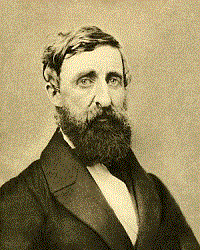

To this day, transcendentalist philosophy, and Thoreau's work in particular, has proven enormously influential – on the program
of the British Labour Party as much as on people as diverse as spiritual leaders Mahatma Gandhi and Martin Luther King Jr. on the
one hand and rock star Don Henley on the other hand. Henley in the 1990s even went so far as to found the Walden Woods Project, teaming
up with the Thoreau Society to preserve as much as possible of Walden Woods and the land around Concord, and foster education about Thoreau.
A man is rich in proportion to the number of things he can afford to let alone.
-Henry David Thoreau
Materialism, Religious Intolerance, Blind faith of any leader or group?...